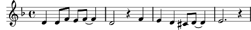

Bruit de mon cœur (le)
Fa majeur
Paroles: Janry Varnel
Musique: Thierry Fervant

C'est le bruit de mon cœur
Qui fait que je grandis,
Que défilent les heures,
Et puis que je vieillis.
C'est le bruit de mon cœur
Qui bat au fond de moi,
Comm' un petit moteur,
Qui fait marcher mes pas.
Refrain:
C'est le bruit de mon cœur
Qui me fait rêver, qui me fait chanter,
C'est le bruit de mon cœur
Qui me dit d'avancer.
C'est le bruit de mon cœur
Je l'entends qui dit: "Garde de tes amis".
C'est le bruit de mon cœur
Qui me dit d'aimer.